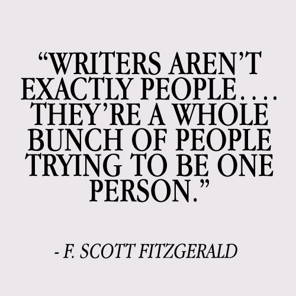
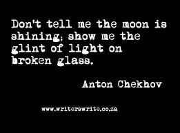
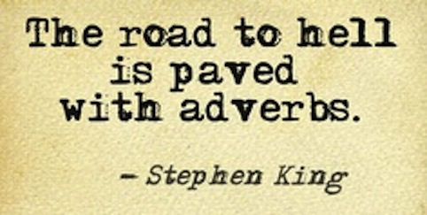
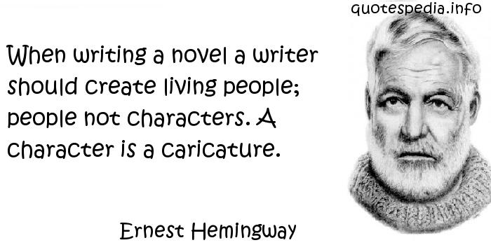

Did you know : William Shakespeare invented the word "hurry"! or
In the book, Les Miserable by Victor Hugo there is one sentence that is 823 words long. ORVirgina Woolf wrote all her books standing. OR from the women who brought us Harry Potter
J.K. Rowling had difficulty getting published.
Writing is a process of self discovery, an exploration of ones mind, sometimes proving to be a rather daunting task, as one famous author put it "Those who go beneath the surface, do so at their peril" Quick question to see if you guys were paying attention. Name the author who wrote the previous quote?? If you have no idea take a wild guess.
click HERE for the answer.
Below please read the question and click the image for the answer Good Luck!
Name his most famous work?

Who was Chekhov first inspiration?

Give the name of the university where King receive his degree?
How old was Shakespeare when he died?
Was Ernest Hemingway a spy?

What best describes the plot of George Orwell's book "1984"?